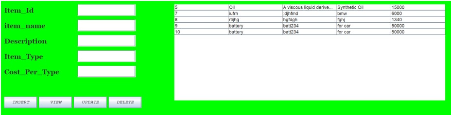
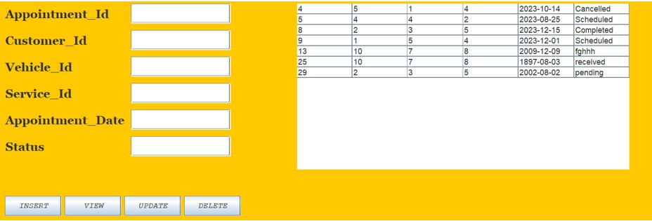
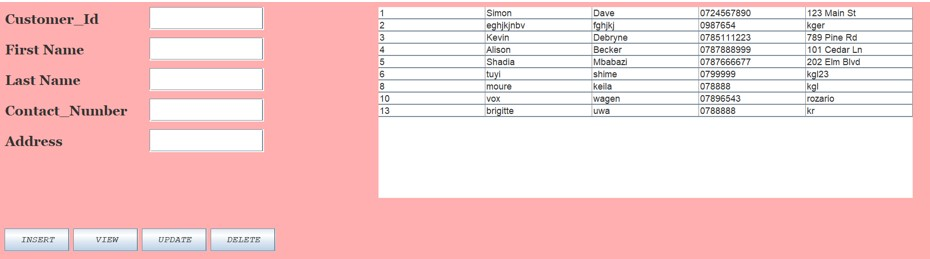
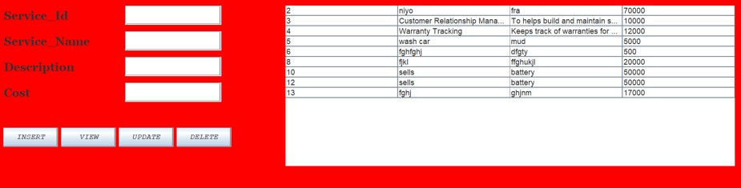

DATABASE AND JAVA WITH GARAGE MANAGEMENT SYSTEM
- DATABASE
- Tables
- Attributes
- DATABASE
Database name used: garage_management_system.
In a Garage Management System (GMS), the Admin table database structure typically stores information about users who have administrative privileges within the system. Here's a basic outline of the Admin table structure:
Note: the created Admin will not have same ability and right in the system.
- vehicle table
vevicle table will pro vide detailed imformation about vehicle which will be like;vehicle_id;plate_number etc.
- Inventory table
An inventory table in a database typically contains information about the items or products a business or organization has in stock. The structure of the table can vary depending on the specific needs and requirements of the business, but here's a basic example of what it might look like:
- Employee table
This structure allows for efficient storage and management of employee information, including personal details, employment history, and organizational relationships. Additionally, it supports functionalities such as reporting, querying, and managing employee records within the organization.
- Transaction table
A transaction table in a database typically records information about financial transactions or events that occur within a business. Here's an example structure for a transaction table:
This structure allows for the recording of various types of transactions, including sales, purchases, refunds, and others. It provides a comprehensive record of financial activities within the business, facilitating analysis, reporting, and auditing processes.
.
- Customer table
A Customer table in a database typically records information about financial potential customer of garage . Here's an example structure for a customer table:
- Appointment table
Our GMS simplifies appointment scheduling for both customers and garage staff. Customers can book appointments online or over the phone, while garage staff can efficiently manage schedules, allocate resources, and optimize workflow to maximize productivity.
:
Services table
The service management feature of our GMS streamlines the entire service process, from appointment scheduling to job completion. You can create service orders, assign tasks to mechanics, track progress, and ensure timely delivery of services to your customers:
Attributes
Attributes of Admin Table
Here are the descriptions or purposes of the attributes/columns used in Admin table:
fname: The columns which are represents first name of user.
Lname: The columns which are represents Lastst name of user.
Id_number: The column which are represents identification number of the user.
gender: The column which are represents or store gender of user like female and male.
martial_status: The column which are represents martial status of user like single,married,divorced,…..
DoB: The column which are represents Date of Birth of user.
Email: The column which are represents Email of given user.
Password: The column which are represents password of the user.
Attributes
Attributes of vehicle Table
Here are the descriptions or purposes of the attributes/columns used in vehicle table:
• vehicle_Id: : The column which are represents id of vehicle which is unique value called PRIMARY.
• customer_id: The column which are represents the identification number of customer as foreign key..
• make: The column which are represents when vehicle maded.
• Mode: The column to present mode of vehicle..
• Licence_plate: The column to present licence plate number of vehicle.
• Vevicle_identification_number: : The columns which are represents the identification number of vehicle.
Services table
The service management feature of our GMS streamlines the entire service process, from appointment scheduling to job completion. You can create service orders, assign tasks to mechanics, track progress, and ensure timely delivery of services to your customers:
Attributes
Attributes of inventory Table
Here are the descriptions or purposes of the attributes/columns used in inventory table:
• item_Id: The column which are represents id of item in inventory which is unique value called PRIMARY KEY.
• Item_name: The column which are represents name of item.
• Description: The column which are represents the description of item.
• Item_type: The column which are represents the type of item..
• Cost_per_type: The column which are represents the cost of each type of item.
Attributes
Attributes of Employee Table
Here are the descriptions or purposes of the attributes/columns used in Employee table:
• Employee_Id: : The column which are represents id of Employee which is unique value called PRIMARY KEY.
• first_name: The column which are represents first_name of Employee.
• Last_name: The column which are represents the Last_name of employee.
• Contact number: The column to represent Contact number of Employee
• Email: : The column which are represents the Email of employee.
• position: :The column which are represents the position that employee are hold.
Attributes
Attributes of Transaction Table
Here are the descriptions or purposes of the attributes/columns used in Transaction table:
• Transaction_Id: : The column which are represents id of each transaction made which is unique value called PRIMARY KEY.
• customer_Id: The column which are represents id of each customer which is references to the product table value called FOREIGN KEY. It is a column of service table which has relationship between Customers table.
• Employee_id: : The column which are represents the identification number of each employee.
• Service_id: The column which are represents the identification number of service .
• Transaction_name: The column to present licence plate number of vehicle.
• Transaction_date: : The columns which are represents the identification number of vehicle.
• Total
The column which are represents the total amount payed on each tansaction.
Attributes
Attributes of Customer Table
Here are the descriptions or purposes of the attributes/columns used in Customer table:
• Customer_Id: : The column which are represents id of product which is references to the Customers table value called FOREIGN KEY.
.First_name: The column which are represents the first name of customer.
• Last_name: : The column which are represents the Last_name of customer.
• Contact_number: The column which are represents the contact number of customer.
• Transaction_date: : The columns which are represents the identification number of vehicle.
• Address
The column which are represents the Address of customer.
JAVA
- Description
Introduction
In this chapter I will be describing how powerful generalpurpose programming language was used to create the analyzed system. Under this chapter I will undergo full detail of how everything will function together with database that have been describe above and how it cope with full analyzed system.
Tools used to develop this system in java programming
Eclipse IDE: an integrated development environment used in computer programming. It contains a base workspace and an extensible plug-in system for customizing the environment. It is the second-most-popular IDE for Java development, and was the most popular.
JAR stands for Java Archive: It's a file format based on the popular ZIP file format and is used for aggregating many files into one. Although JAR can be used as a general archiving tool, the primary motivation for its development was so that Java applets and their requisite components.
- Forms and Images
nventory Form

Appointment Form

Customer Form

Services Form

Vehicle Form

Transaction Form

Employee Form